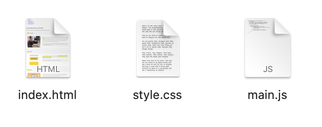

Modular Design
Each html file has its own css & js file. So when one file goes wrong, the other pages won'y be affected.
Clear Comment

The html, css files are so long, that without comments, I can hardly tell which code is taking about what. So comments are really important.
Explanation of Challenging Parts
I think the most difficult point lies in writing javascript. Especially the logic of controlling the navigation bar with the keyboard. Because I have been exposed to c++ a lot before, I would write javascript with the thinking of c++, which left me completely confused. However, the web develop course only introduced a few simple functions of javascript. So I searched for a lot of materials and videos online, and learned the source codes of many websites. Finally, I created this function.
Developer Tools Usage
Tech Stack & Tools
This project applies Design-Thinking methodology, focusing on modular development based on
repository structure (e.g., homepage, portfolio modules) to ensure
code maintainability and user experience. Below are the core technologies and tools used:

HTML5
HTML is the foundation of web page structure, organizing text, images and multimedia through tags, and building modern web pages in conjunction with CSS and JavaScript.

CSS3
CSS controls the visual presentation and layout of web pages, sets colors, fonts, and spacing, and enhances user experience in combination with responsive design.

JavaScript
JavaScript adds interactive and dynamic effects to web pages, such as form validation, animations, and real-time updates, making the web pages more vibrant.
What I have learnt?
This web design project was a fun and exciting journey for me. I started with HTML to make the basic parts of my webpage. I learned how to use tags like div to build a simple structure. Also, I studied CSS to make my pages look nice. I learned about the box model, positioning, and display styles like flex and grid. I faced some hard parts, like fixing JavaScript errors and matching styles across files. But I kept trying. This project helped me grow a lot. I went from knowing nothing to making a full website that works well and looks good. I learned to think about users and make my site easy for everyone to use. I'm really proud of my progress. Now I want to learn more, like how to use React for better websites and study UI/UX to make designs even nicer. I also want to help my community by making websites for local groups to share ideas about the environment.